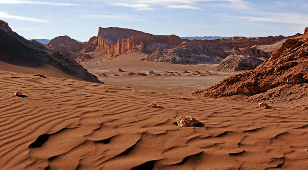

Desiertos
Los desiertos cubren más de una quinta parte de la superficie terrestre y
se encuentran en todos los continentes. Son aquellas areas que recibe menos de 25 centímetros de lluvia al año. Los desiertos forman parte de una clase más amplia de regiones denominadas zonas áridas, estas zonas experimentan un "déficit de
humedad", lo que significa que con frecuencia pueden perder más humedad, que la que reciben de las precipitaciones anuales.
Los animales del desierto han evolucionado para mantenerse frescos y consumir menos agua. Debido a sus especialísimas adaptaciones, son extremadamente vulnerables a los cambios en su hábitat.
Las plantas del desierto pueden carecer de agua dulce durante años; algunas se han adaptado al clima árido desarrollando largas raíces que extraen el agua del subsuelo. Otras, como los cactus, tienen medios especiales para almacenar y conservar el agua.
¿Como podes ayudar?
En los desiertos existentes, algunas especies están en peligro debido al cambio climático.
El calentamiento global amenaza con cambiar la ecología de los desiertos: el aumento de las temperaturas puede producir más incendios forestales que alteren los paisajes desérticos al eliminar los árboles y arbustos de crecimiento
lento y sustituirlos por hierbas de crecimiento rápido.
Muchas plantas del desierto pueden vivir cientos de años. No obstante, los científicos advierten que es posible que algunas plantas de esta habitat,no sobreviva a un clima más cálido. Si no lo hace, podría repercutir en especies como la polilla de la yuca,
que pone sus huevos dentro de la flor de las plantas.
Las especies de aves del desierto también podrían estar en peligro por el cambio climático, ya que las olas de calor provocan una deshidratación letal. Sumate con tu granito de arena, y no dejemos de lado la vida que habita los desiertos del mundo!